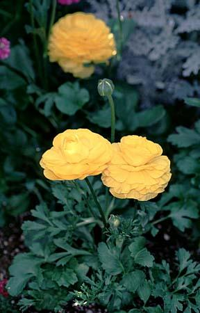

In Stock
Wild hyacinth:
This bulbflower naturalizes well in gardens. The bulb grows best in well-drained soil high in humus. It will grow in lightly shaded forest areas and on rocky outcrops as well as in open meadows or prairies. Additionally it is found growing alongside streams and rivers. The plants may be divided in autumn after the leaves have withered. Bulbs should be planted in the autumn. Additionally the plant spreads by seed rather than by runners.

Lily-of-the-Valley:
With its deeply fragrant flowers -- scallop-edge bells that dangle above bright emerald-green leaves -- this nearly deer-proof shade lover appears to be delicate in an old-fashioned way. But the pretty plant is also an intrepid wanderer, spreading readily and rapidly, and anyone who gardens in a small space will want to watch this perennial to make sure it stays in bounds. Tolerates shade well. Warning: this plant is poisonous.

Crown imperials:
Crown imperials are strong-growing bulbous plants, making rapid growth in the spring, flowering during April/early May and dying down in early summer. Best in raised beds or planters. Does not tolerate shade; needs a warm, sunny position where it can be left undisturbed for many years.

Persian buttercup:
Persian buttercup: This species of buttercup can get up to 2 feet tall and has large showy blooms in a variety of colors from May to June. Persian buttercups are most commonly grown from tubers planted in the beginning of spring. Each plant will produce up to 70 blooms in a season. Good for cooler weather; can tolerate light frost.
Spring starflower:
These charming little blooming plants hail from Argentina and Uruguay and form dense clumps of perennial flowers to chase the winter doldrums away. These flowers spring from fall planted bulbs. They can get up to half a foot tall with a similar spread. Each bulb will produce numerous flowering stems with slender, deeply green foliage. Blooms are fragrant and star shaped with six blue or white petals.

Tulips:
We have a wide variety of tulips in many colors. Plant tulip bulbs in the fall, 6 to 8 weeks before a hard frost is expected and when soils are below 60 degrees F.